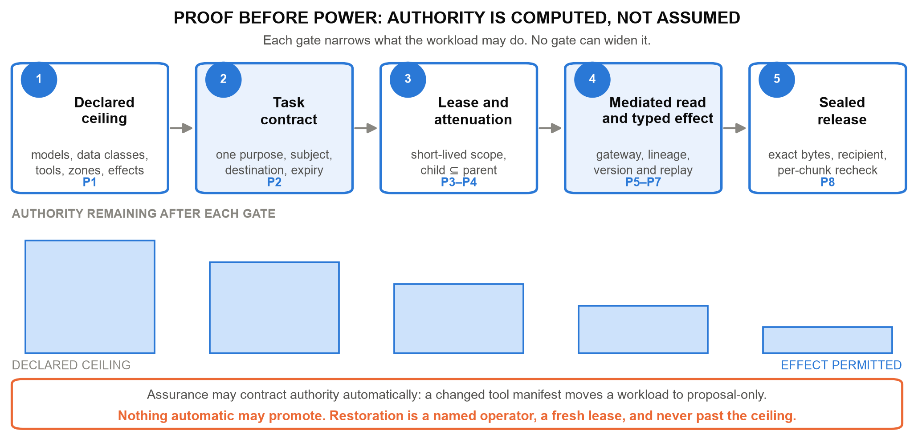
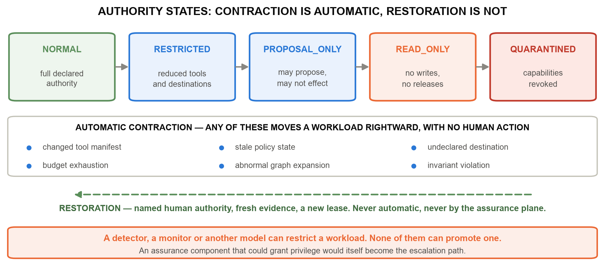
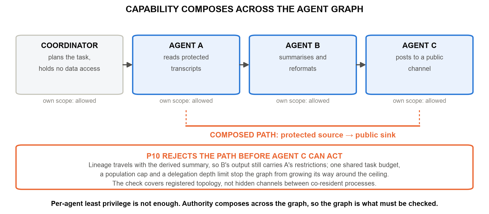
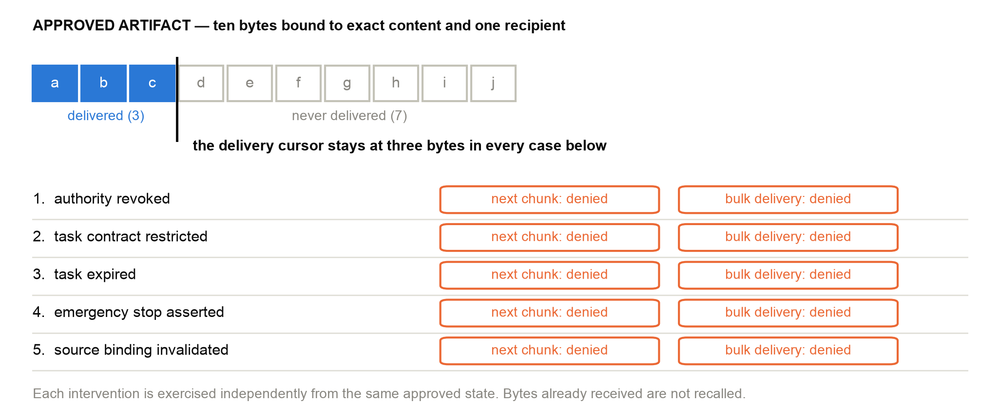

Trust by Construction: Secure-by-Design Patterns for Agentic AI in Learning Institutions
Scale Intelligence Without Scaling Implicit Authority
Enterprise Architect | AI Systems Researcher
UNU Macau AI Conference 2026 — “AI × Education: AI for Learning, Learning for AI” | Artifact: github.com/genaiworks/fssai-ra
Abstract
Agentic AI now reads institutional records, writes memory, calls tools, spawns other agents and changes systems of record. The security question is no longer whether the model answers well. It is what the software around the model permits it to cause when it is wrong, manipulated or adversarial. Trust by Construction answers with architecture rather than assurance. The model is an untrusted source of proposals; every protected read, effect and disclosure is admitted by deterministic services the model cannot address, hold credentials for, or argue with. This paper states that architecture as a catalogue of ten design patterns — declared ceiling, task contract, credentialless runtime, attenuated delegation, mediated context, reauthorised memory, typed effect, sealed release, restricting monitor and declared graph — each named with the implicit authority it removes and the refusal that proves it gone, and each placed on one task lifecycle. The patterns compose under a single design rule, proof before power: authority narrows at every gate and never widens automatically. A public Apache-2.0 reference kernel implements the catalogue, binds every written guarantee to a named executable refusal, and regenerates its evidence offline on ordinary hardware. For learning institutions the result is agent software whose authority a registrar can read in a declaration, and a concrete way to teach the difference between a fluent answer and a legitimate action.
Keywords: agentic AI security; design patterns; capability-based authorisation; prompt injection; multi-agent systems; information-flow control; AI literacy; education governance
1. From Model Risk to Authority Risk
A transcript assistant should retrieve the one record it was asked about, propose a correction, and deliver the approved result to the registrar who asked. It should not open a second student's file because a retrieved document told it to, approve its own proposal, or keep delivering after an administrator revoked the task. Nothing in that list is a reasoning failure. Each is an authority failure, and authority is a property of the software around the model, not of the model.
Learning institutions make the point sharply. Tutors reach student records. Research agents traverse public sources and repositories. Coding agents execute software. Administrative agents touch assessment, admissions and finance. The moment such an agent holds a standing credential, a single injected instruction becomes an institutional act.
The 2026 compromise of widely used model-hosting infrastructure showed how the sequence runs in practice: a conventional software flaw opened the door, and standing credentials, network reach and machine-speed coordination decided the blast radius [1–3]. Indirect prompt injection had already been demonstrated against deployed applications [4], and benchmarks that plant hostile instructions inside ordinary tool-integrated tasks have made it routine to reproduce [5–7]. More recent evaluations vary the environment rather than the prompt, and report that defences which hold on a static suite come apart when the deployment moves [8,9]; agents have also been shown to leak through entirely permitted outbound behaviour, with no visible exfiltration step at all [10]. Standards bodies have converged on the same conclusion from the governance side: identity, scoped authorisation, runtime control and traceability are now first-class agent requirements [27–32].

Trust by Construction takes the conclusion literally. Everything the intelligence layer emits — planned steps, retrieved text, memory, generated code, tool output, messages from other agents — is untrusted input. Between it and the institution sits a control plane that authenticates the caller, recomputes what the caller may currently do, validates the exact operation, and only then permits an effect. The contribution is not a new primitive. It is a catalogue of patterns that hold this line at each point where an agentic system usually leaks, stated so that an engineer can build them and a registrar can read them.
2. Proof Before Power: The Design Rule
One rule governs the whole catalogue. Before an agent receives more context, another tool, another agent, network reach, a consequential effect, or permission to release information, independently enforced software must establish that the requested power lies inside the active task, policy, data rights, processing zone and budget. We call it proof before power.
The rule has a precise consequence that every pattern below preserves. A model output may select among operations the institution already permits, and it may trigger a restriction. It can never produce an operation outside that set. Authority is computed from current trusted state at each boundary — identity, contract, lineage, approvals, resource version, revocation epoch, remaining budget — and never cached from an earlier decision. An approval granted a second ago does not survive a revocation issued since.

The asymmetry between contraction and promotion is the part most often built backwards. Detectors, monitors and reviewing models are useful, and they fail. If a clean verdict could restore a privilege, then the detector would be the escalation path, and an attacker would aim there first. So assurance components in this architecture hold one direction of authority only: they may narrow, and a named human operator with fresh evidence is the only way back, bounded by the ceiling the workload started with.
This is the same instinct as recent system-level defences, and the catalogue is an attempt to generalise them. CaMeL separates control flow from untrusted data so that injected text cannot direct execution [12]; FIDES carries information-flow labels through an agent's reasoning [13]; system-level analyses argue that information flow, not detection, is the durable framing [15]; and design patterns for agent security trade some generality for containment by construction [14]. Model-level robustness earned through preference optimisation raises attacker cost and remains welcome [16], but a boundary that holds only for a well-behaved model is not a boundary. AI-control research makes the same assumption explicit by asking what safety survives a model that is actively subverting the protocol [17,18], and the evidence for taking that seriously keeps accumulating: scheming under evaluation pressure [19], the fragility of chain-of-thought monitorability [20], insider-style behaviour under goal conflict [21], misalignment emerging from reward hacking in production training [22], and sabotage that is hard to catch by observation [23,24]. Proposals for deliberately non-agentic systems address the same worry from the opposite end [25]. Our position is narrower and more boring: assume the reasoning layer may be wrong or hostile, and design the software so that the institution's exposure does not depend on which.
3. A Pattern Language for Agentic Software
A pattern here is a small, buildable thing: an implicit authority that agentic systems usually grant by accident, the structure that removes it, and an executable refusal that proves it is gone. A pattern with no refusal is a slogan. Table 1 is the catalogue; Figure 3 places it on the task lifecycle.
Table 1. The catalogue. Each pattern names an authority that agentic systems commonly grant by default, and the refusal that demonstrates it has been removed. The reference implementation carries one or more executable tests per row.
| Pattern | The implicit authority it removes | Refusal that proves it |
|---|---|---|
| P1 Declared ceiling | A workload whose reachable data, tools, zones and effects were never written down | An undeclared interface is refused at the boundary |
| P2 Task contract | A session that keeps yesterday's scope for today's purpose | A request outside purpose, subject, destination or expiry is refused |
| P3 Credentialless runtime | A model process holding a database, cloud or signing credential | A call without a live scoped lease is refused |
| P4 Attenuated delegation | A spawned agent that starts with fresh authority and a fresh budget | A child scope wider than its ancestor is refused |
| P5 Mediated context | Retrieval that authorises after the record has reached the model | A read outside subject or cumulative scope is refused |
| P6 Reauthorised memory | Stored context that is trusted because it was once authorised | A read of quarantined or unauthorised memory is refused |
| P7 Typed effect | Natural language that reaches a system as a command | A proposal with a stale version, replay or unknown destination is refused |
| P8 Sealed release | Approval of a summary while different bytes leave the building | A changed artifact, recipient or epoch refuses the next chunk and the bulk path |
| P9 Restricting monitor | An assurance component that can hand back a privilege | An automated restoration of authority is refused |
| P10 Declared graph | Agents that are each in policy and jointly out of it | A protected-source-to-public-sink path is refused before the terminal agent acts |

3.1 Declaring the ceiling, then narrowing it
P1, the declared ceiling, is an AI Workload Passport: a machine-readable statement of approved models, data classes, processing zones, tools, memory policy, network destinations, delegation depth, budgets, permitted effects and the safe failure state. Its companion, the Effect and Disclosure Inventory, enumerates every interface through which this workload can change something or reveal something. That enumeration is what turns complete mediation from an aspiration into a checkable property: an interface that is not on the list is refused, not discovered later in an incident review.
P2, the task contract, narrows the ceiling to one execution — one purpose, subject, resource set, destination, budget and expiry. Purpose is not documentation here; it is an enforced field. A tutoring task that legitimately reads a transcript for a correction has no authority to read the same transcript for a recommendation letter, because the second purpose was never in the contract.
P3, the credentialless runtime, removes the most valuable thing an attacker can find inside a model process. The agent holds no database password, no cloud-control credential, no signing key. It requests a short-lived, scoped lease for a specific operation and surrenders it. Compromise then yields the ability to ask, which the control plane answers on the merits of current state rather than on possession of a secret.
3.2 Reading and remembering
P5, mediated context, authorises retrieval before records reach the model and caps cumulative scope inside a task. The ordering matters more than it looks: a system that retrieves first and filters afterwards has already placed protected content inside an untrusted component, and every downstream check is a hope.
P6, reauthorised memory, treats persistence as a privileged write and every later read as a fresh authorisation. Records carry provenance, integrity, purpose and retention, and derived data inherits the restrictions of its sources through summaries, handoffs, proposals and artifacts. Transformation is not declassification: a summary of a restricted transcript is a restricted artifact. The pattern also gives operators a recovery move that revoking an agent cannot: quarantine the exact source binding, and every tracked derivative becomes unavailable — after a restart, and to a freshly spawned agent that never saw the original. Repair requires a new binding. What quarantine cannot do is unsee what was already read or recall bytes already delivered, which is exactly why the release pattern below is strict.
3.3 Acting
P7, the typed effect, is where natural language stops. To change institutional state, the model emits a typed intermediate representation: canonical resource identifiers and a desired state transition, with no credentials, no free-form SQL, no shell, no policy declarations. A deterministic executor revalidates caller, lease, current resource version, replay state, destination and domain invariants, then commits. Approval binds the exact proposal rather than an open-ended instruction, which is what separates real separation of duty from a confirmation dialog.
Tool descriptions deserve the same suspicion as model text. Shared protocols have made the description itself part of the supply chain [26], so approval binds the description bytes, schema and server identity that the model will actually read, and any drift invalidates the approval. Scanning a description can inform a human decision; sandboxed emulation of tool use shows why it cannot prove one safe [11].
3.4 Releasing
P8, sealed release, binds approval to exact artifact bytes and one authenticated recipient, then rechecks recipient, epoch, destination, expiry, stop state and source quarantine at every chunk boundary. Revocation denies the next chunk and the bulk path alike. That second half is the one systems get wrong: incremental delivery is reauthorised carefully while a bulk fallback sits unguarded beside it.
Sealing bytes does not seal every channel. An agent that may release at all still chooses destination, timing, size and count, and those choices carry information. The reference kernel therefore treats release choice as part of the policy surface — fixed destination and path, coarsened timing, padded sizes, bounded release count — and measures what remains, because a clean payload is not proof that nothing was disclosed [10].
3.5 Assurance that can only restrict
P9, the restricting monitor, is the catalogue's structural answer to unreliable detection. A separately deployed monitor sees allowlisted metadata rather than protected text and returns a constrained finding. It may move a workload rightward through NORMAL, RESTRICTED, PROPOSAL_ONLY, READ_ONLY and QUARANTINED. It may never move it back. Findings bind to fresh task and evidence heads and are rejected if forged, stale, replayed or submitted under another role.

The cost is honest and worth stating once: strict controls deny useful work, and a badly calibrated monitor denies a great deal of it. That is a trade an institution can measure and tune. The alternative trade — a detector that can hand back privilege — is one it cannot bound.
4. Swarms: When Individually Safe Agents Compose a Prohibited Path
Per-agent least privilege stops being sufficient the moment agents cooperate. Three agents may each hold a defensible scope — one reads authorised transcripts, one summarises, one posts to a public channel — while the composition forms a protected-source-to-public-sink path that no single contract permits. Evaluations that vary the environment report this class directly [8,9], and harmfulness benchmarks show the damaging behaviour is usually assembled from individually ordinary steps [7].
P4, attenuated delegation, and P10, the declared graph, answer at the level of the population. Every agent is registered with a persistent identity, parent, task, model, zone, expiry and ceiling. A child inherits a subset of its ancestors' authority and draws from one shared task budget, under population and depth caps, so spawning cannot manufacture rights or multiply spend. A semantic airlock preserves source lineage and classification across typed messages, so the summariser's output still carries the transcript's restrictions. The Guardian then checks the declared graph for source-to-sink paths — including potential reads, before any data has flowed — and rejects the composition before the terminal agent acts.

5. Building With the Patterns: the Reference Kernel
The catalogue is implemented as the public FSSAI-RA reference kernel and its SDK. The kernel runs offline with no model weights and no GPU. It exposes request_context(), request_capability(), invoke_tool(), persist_memory(), propose_effect() and release_artifact(), plus separate operator and recipient interfaces, over a joined workflow with machine-readable authority profiles, domain packs, conformance tests, bounded model checking and generated evidence. Dispatch authenticates the agent, intersects current authority, checks the declared graph, consumes the call budget, validates the request schema, and revalidates the operation before committing its effect and its receipt. Rejected operations roll back their effects while retaining the authenticated attempt; an evidence failure fails closed.
Failure handling is where architectures of this kind are actually tested. A local transaction cannot atomically commit a remote effect, so the ledger records intent before submission under an operation-bound key; an unacknowledged call stays uncertain and blocks dependent work instead of being blindly retried, and reconciliation requires either an applied acknowledgement or an authoritative terminal absence. Emergency stopping revokes agents, quarantines tasks and advances epochs before it attempts to record evidence, so a failed evidence write cannot undo a stop — ordering that is easy to get backwards and expensive to get wrong. Figure 6 shows the delivery behaviour as the test suite records it.

Every guarantee in this paper is bound to a declarative capability contract, and every contract names the test that fails if its mechanism is removed. A guarantee with no failure test cannot be entered in the register.
contract_id transcript.correction.commit
pattern P7 typed effect + P2 task contract
protected_asset student transcript record, authoritative store
permitted_op version-bound field correction, one subject, one task
enforcement_point executor.commit_effect - revalidates lease, resource
version, replay state, destination, domain invariants
accountable_owner registrar (an institutional role, not a service account)
failure_test tests/test_frontier_controls.py -k stale_approval_rejected
evidence_artifact audit/architecture/full-tests.xml
failure_response refuse, record the blocked attempt, require fresh reviewListing 1. One capability contract. The fields are fixed: pattern, protected asset, permitted operation, enforcement point, accountable owner, failure test, evidence artifact and failure response. The register maps the architecture's control identifiers to these records, so any claim can be followed to an execution.
All results below are produced by scripted adversarial and benign fixtures over the declared interfaces — synthetic records written for the purpose, with no student data and no production traffic — and they demonstrate that the mechanisms hold under specified failures rather than estimating anything about the world.
Table 2. What the reference kernel records when the catalogue is executed. Every row is enforcement code running against scripted fixtures; counts overlap and are not additive.
| Mechanism check | Recorded behaviour | Reading |
|---|---|---|
| Controlled comparison | 0/7, then 2/7, then 7/7 hostile proposals contained | The patterns, not the prompt, produce containment |
| Six domain profiles | 180/180 hostile contained; 58/58 benign completed | The catalogue rebinds without core changes |
| Pattern ablation | Each of eight removals re-enables its harmful action | No pattern in the set is decorative |
| Bounded falsification | 104,997 attempts; no counterexample in the declared space | The design rule survives its own search |
| Recorded regression | 1,445 tests passed; 37 capability contracts executed | Every guarantee names a test that fails without it |
Two results are worth more than the containment numbers. Ablation says which patterns earn their place: remove one, and its harmful action becomes possible again. And monitor substitution tests the design rule at its weakest point — an oracle monitor, a blind monitor and a hostile monitor run against the same trajectories, and none of them admits a prohibited outcome. The hostile monitor drives useful work to zero, which is the availability cost named above, and exactly the shape of failure the architecture chooses.
6. Adopting the Catalogue in a New Domain
A pattern language is only useful if someone else can build with it. Adopting the catalogue for a workflow takes four reviewable artifacts and a fixed order of work.
Name the authoritative records, the permitted purpose, the reviewer roles, the delivery destination and the failure response. Write a domain profile declaring subjects, resources, purposes, tools, effects and budgets. Write one capability contract per protected asset, in the form of Listing 1. Write an adapter that maps the institution's real service onto that contract, including versions, retries, uncertainty and identity semantics. Then test benign completion and refusal together, and then the cross-boundary cases that composition breaks: delegation followed by revocation, source quarantine after approval, and a lost acknowledgement after an external submission.
Six domain profiles already exercise this path across education, health, finance, legal services, enterprise data and public benefits, which is the practical argument that the catalogue is not education-specific. A new declaration reuses the existing patterns. A genuinely new enforcement mechanism means core work and a fresh review of the design rule, because proof before power holds only over interfaces that actually run the contract.
The patterns also place obligations on the deployment, and the reference makes them explicit rather than implied. These are engineering tasks with owners, not caveats.
Table 3. What the deployment must build for the catalogue to hold, and what the reference supplies for each. Isolation probes classify each required measurement as satisfied, violated or not measurable; a missing measurement is recorded as missing and never counted as a pass.
| What the deployment must build | What the reference supplies for it | |
|---|---|---|
| B1 | Enforcement code and the control store the model cannot write | Isolation probes that record satisfied, violated or not measured |
| B2 | Key and credential custody outside the model process | A credentialless runtime and lease broker to build against |
| B3 | One declared path to every protected system | The effect and disclosure inventory that makes the set enumerable |
| B4 | Authenticated, attributable operator action | Operator interfaces separate from agent interfaces, bounded by the ceiling |
| B5 | Adapters that preserve identity, version and destination | A conformance suite and settlement contract each adapter must pass |
7. Relevance to AI × Education and Sustainable Development
Education sharpens the general problem rather than merely illustrating it. Purpose limitation maps onto the task contract exactly. Student and assessment data require explicit subject and release boundaries. Research agents need Internet reach without carrying sensitive institutional context. Coding agents need sandboxed execution. And assessment shows why an authorised action can still be the wrong one — a distinction the architecture preserves rather than blurs, because capability enforcement establishes who may act and never whether the act is right.
That distinction is also the teaching material. For AI for Learning, the patterns make access and intervention in student workflows something a registrar can read in a declaration instead of inferring from behaviour. For Learning for AI — the second half of this conference's framing [40] — the transcript example becomes an exercise: learners compare a valid correction against a forged approval, a contaminated memory, a hostile monitor and a composed agent path, and watch each one get refused. The objective is to separate fluent reasoning, source validity, legitimate authority and substantive correctness, four things that novices and experts alike collapse into "the AI said so". This is the architectural half of AI literacy that competency frameworks are now asking for [36,37].
The governance mapping is concrete. Declared ceilings and task contracts record scope and responsibility; refusal evidence supports risk measurement; revocation and quarantine support operational response. These artifacts feed the GOVERN, MAP, MEASURE and MANAGE functions of the NIST AI risk framework [33] and the documented controls of an AI management system under ISO/IEC 42001 [34], while the EU AI Act's treatment of educational uses, record-keeping and human oversight bears directly on the same interfaces [35]. Agent identity work in standards bodies is converging on the same requirement from the infrastructure side: authority issued, scoped and revocable rather than inherited from a human session [28–30].
Finally, the artifact is a digital public good rather than a product. It is Apache-2.0, it runs offline on ordinary hardware without GPUs, model weights or a commercial guardrail subscription, and it publishes its profiles, contracts, tests and generated evidence so that an institution can check the claims instead of buying assurance. That matters for equity, because the institutions most exposed to agentic risk are often those least able to fund proprietary security tooling. It supports SDG 4 by protecting records, assessment integrity and the fairness of automated administrative decisions; SDG 9 by supplying reusable, auditable infrastructure for autonomous institutional workflows; and SDG 16 by making institutional authority explicit, bounded, revocable and evidenced [38,39].
8. Conclusion
Increasingly autonomous AI does not require increasingly implicit trust. It requires increasingly explicit architecture. The ten patterns in this paper are the explicit form: each removes one authority that agentic software grants by default, each is proved by a refusal that can be executed, and together they hold one rule — proof before power. The goal is not an infallible model. It is a resilient institution, in which model capability can grow without quietly enlarging what a model may read, change or disclose.
Scale intelligence. Bound authority. Preserve lineage. Verify continuously. Recover safely.
Artifact Availability
The Apache-2.0 reference kernel, machine-readable authority profiles, capability contracts, synthetic adversarial and benign suites, generated results and assurance claims are at https://github.com/genaiworks/fssai-ra; begin with DEVELOPER_GUIDE.md. The reviewer path runs offline once development dependencies are installed: python -m pytest, python scripts/check_tbc_alignment.py, python scripts/check_architecture.py, python scripts/verify_architecture.py and python scripts/generate_results.py --check. The full repository check is make all. For the principal failure checks run python -m pytest tests/test_frontier_controls.py; within that file the selectors stream_reauthorizes, stop_stays_effective and ai_monitor_can_contract exercise, respectively, the five delivery interventions of Figure 6, evidence-writer failure during an emergency stop, and rejection of monitor-driven restoration. No model weights, GPU or real student records are required.
References
[1] Hugging Face (2026). Security Incident Disclosure - July 2026. Hugging Face. https://huggingface.co/blog/security-incident-july-2026
[2] OpenAI (2026). The Hugging Face Incident and the Road Ahead. OpenAI. https://openai.com/index/hugging-face-incident-and-the-road-ahead/
[3] METR and Redwood Research (2026). Brief Independent Investigation of Agents' Behavior, Reasoning and Collaboration in the OpenAI and Hugging Face Hacking Incident. METR.
[4] K. Greshake et al. (2023). Not What You've Signed Up For: Compromising Real-World LLM-Integrated Applications with Indirect Prompt Injection. ACM Workshop on Artificial Intelligence and Security (AISec), pp. 79-90. https://doi.org/10.1145/3605764.3623985
[5] Q. Zhan, Z. Liang, Z. Ying and D. Kang (2024). InjecAgent: Benchmarking Indirect Prompt Injections in Tool-Integrated Large Language Model Agents. Findings of the Association for Computational Linguistics: ACL 2024. https://arxiv.org/abs/2403.02691
[6] E. Debenedetti et al. (2024). AgentDojo: A Dynamic Environment to Evaluate Prompt Injection Attacks and Defenses for LLM Agents. Advances in Neural Information Processing Systems (Datasets and Benchmarks). https://arxiv.org/abs/2406.13352
[7] M. Andriushchenko et al. (2025). AgentHarm: A Benchmark for Measuring Harmfulness of LLM Agents. International Conference on Learning Representations (ICLR). https://arxiv.org/abs/2410.09024
[8] F. Alpay and T. Alpay (2026). AgentSecBench: Measuring Prompt Injection, Privacy Leakage, and Tool-Use Integrity in LLM Agents. arXiv preprint 2605.26269. https://arxiv.org/abs/2605.26269
[9] H. Li et al. (2026). AgentDyn: Are Your Agent Security Defenses Deployable in Real-World Dynamic Environments? arXiv preprint 2602.03117. https://arxiv.org/abs/2602.03117
[10] Q. Lan et al. (2026). Silent Egress: When Implicit Prompt Injection Makes LLM Agents Leak Without a Trace. arXiv preprint 2602.22450. https://arxiv.org/abs/2602.22450
[11] Y. Ruan et al. (2024). Identifying the Risks of LM Agents with an LM-Emulated Sandbox. International Conference on Learning Representations (ICLR). https://arxiv.org/abs/2309.15817
[12] E. Debenedetti et al. (2025). Defeating Prompt Injections by Design. arXiv preprint 2503.18813. https://arxiv.org/abs/2503.18813
[13] M. Costa et al. (2025). Securing AI Agents with Information-Flow Control. arXiv preprint 2505.23643. https://arxiv.org/abs/2505.23643
[14] L. Beurer-Kellner et al. (2025). Design Patterns for Securing LLM Agents against Prompt Injection. arXiv preprint 2506.08837. https://arxiv.org/abs/2506.08837
[15] F. Wu, E. Cecchetti and C. Xiao (2024). System-Level Defense against Indirect Prompt Injection Attacks: An Information Flow Control Perspective. arXiv preprint 2409.19091. https://arxiv.org/abs/2409.19091
[16] S. Chen et al. (2025). SecAlign: Defending Against Prompt Injection with Preference Optimization. arXiv preprint 2410.05451. https://arxiv.org/abs/2410.05451
[17] R. Greenblatt, B. Shlegeris, K. Sachan and F. Roger (2024). AI Control: Improving Safety Despite Intentional Subversion. International Conference on Machine Learning (ICML). https://arxiv.org/abs/2312.06942
[18] R. Shah et al. (2025). An Approach to Technical AGI Safety and Security. arXiv preprint 2504.01849. https://arxiv.org/abs/2504.01849
[19] B. Schoen et al. (2025). Stress Testing Deliberative Alignment for Anti-Scheming Training. arXiv preprint 2509.15541. https://arxiv.org/abs/2509.15541
[20] T. Korbak et al. (2025). Chain of Thought Monitorability: A New and Fragile Opportunity for AI Safety. arXiv preprint 2507.11473. https://arxiv.org/abs/2507.11473
[21] A. Lynch et al. (2025). Agentic Misalignment: How LLMs Could Be Insider Threats. arXiv preprint 2510.05179. https://arxiv.org/abs/2510.05179
[22] M. MacDiarmid et al. (2025). Natural Emergent Misalignment from Reward Hacking in Production RL. arXiv preprint 2511.18397. https://arxiv.org/abs/2511.18397
[23] J. Kutasov et al. (2025). SHADE-Arena: Evaluating Sabotage and Monitoring in LLM Agents. arXiv preprint 2506.15740. https://arxiv.org/abs/2506.15740
[24] R. Kirk et al. (2026). Evaluating Whether AI Models Would Sabotage AI Safety Research. arXiv preprint 2604.24618. https://arxiv.org/abs/2604.24618
[25] Y. Bengio et al. (2025). Superintelligent Agents Pose Catastrophic Risks: Can Scientist AI Offer a Safer Path? arXiv preprint 2502.15657. https://arxiv.org/abs/2502.15657
[26] Anthropic (2025). Model Context Protocol Specification. Open specification. https://modelcontextprotocol.io/specification
[27] National Institute of Standards and Technology (2020). Zero Trust Architecture. NIST SP 800-207. https://doi.org/10.6028/NIST.SP.800-207
[28] National Institute of Standards and Technology, Center for AI Standards and Innovation (2026). AI Agent Standards Initiative. NIST. https://www.nist.gov/news-events/news/2026/02/announcing-ai-agent-standards-initiative-interoperable-and-secure
[29] NIST National Cybersecurity Center of Excellence (2026). Accelerating the Adoption of Software and Artificial Intelligence Agent Identity and Authorization. Initial Public Draft.
[30] J. Riggs et al. (2026). Summary Analysis of Responses Regarding Security Considerations for AI Agents. NIST Trustworthy and Responsible AI 800-5.
[31] OWASP GenAI Security Project (2025). OWASP Top 10 for Agentic Applications for 2026. OWASP Foundation. https://genai.owasp.org/
[32] OWASP GenAI Security Project (2026). Agent Control Standard. OWASP Foundation. https://genai.owasp.org/
[33] National Institute of Standards and Technology (2023). Artificial Intelligence Risk Management Framework (AI RMF 1.0). NIST AI 100-1. https://doi.org/10.6028/NIST.AI.100-1
[34] International Organization for Standardization (2023). Information Technology - Artificial Intelligence - Management System. ISO/IEC 42001:2023. https://www.iso.org/standard/81230.html
[35] European Parliament and Council (2024). Regulation (EU) 2024/1689 Laying Down Harmonised Rules on Artificial Intelligence. Official Journal of the European Union. https://eur-lex.europa.eu/eli/reg/2024/1689/oj/eng
[36] UNESCO (2023). Guidance for Generative AI in Education and Research. UNESCO, Paris. https://unesdoc.unesco.org/ark:/48223/pf0000386693
[37] UNESCO (2024). AI Competency Framework for Students. UNESCO, Paris. https://unesdoc.unesco.org/ark:/48223/pf0000391105
[38] United Nations General Assembly (2024). Global Digital Compact. Annex I to Resolution A/RES/79/1, Pact for the Future. https://www.un.org/global-digital-compact
[39] United Nations General Assembly (2015). Transforming Our World: The 2030 Agenda for Sustainable Development. Resolution A/RES/70/1. https://sdgs.un.org/2030agenda
[40] United Nations University Macau (2026). UNU Macau AI Conference 2026. United Nations University. https://unu.edu/macau/aiconf2026